Captured from the real app running the redesign branch, signed in as the demo account.
The "Open debugger" toast on the logger shots is a development-build warning and does not appear in a release build.
Click any screen to enlarge it.
Before and after
Before
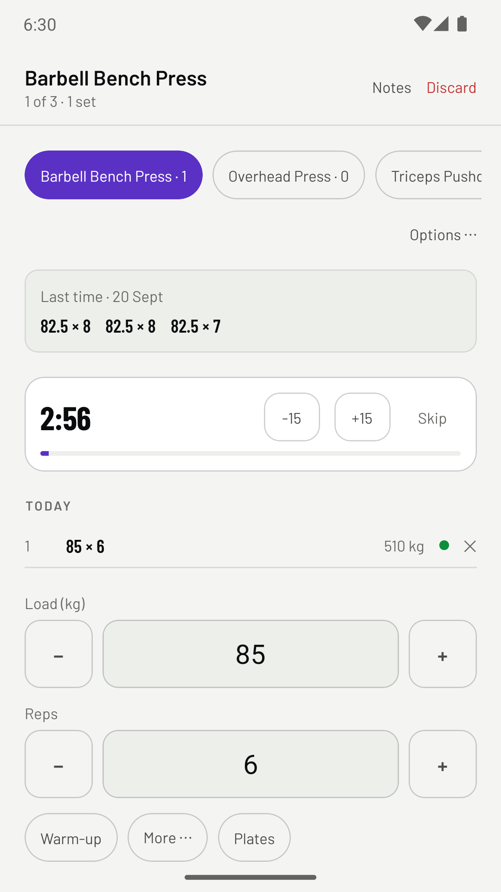
After
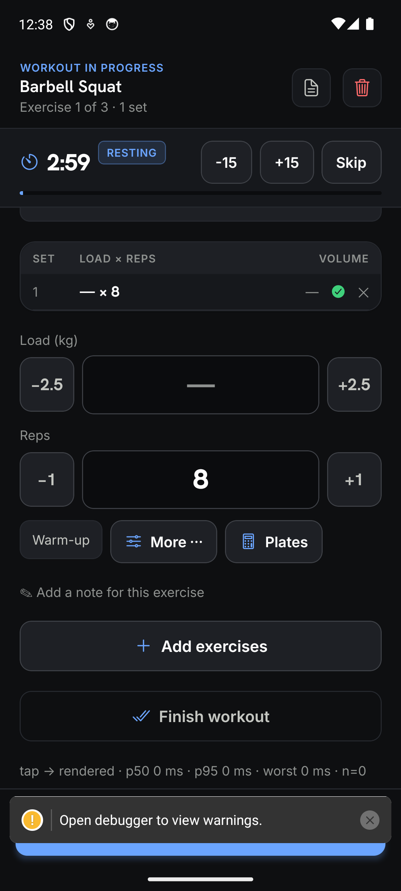
Before
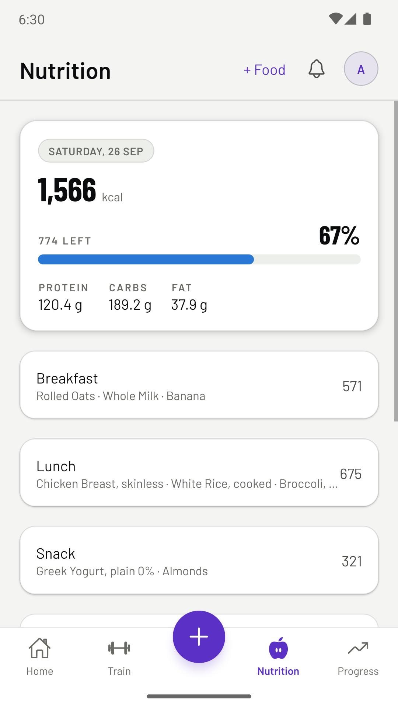
After
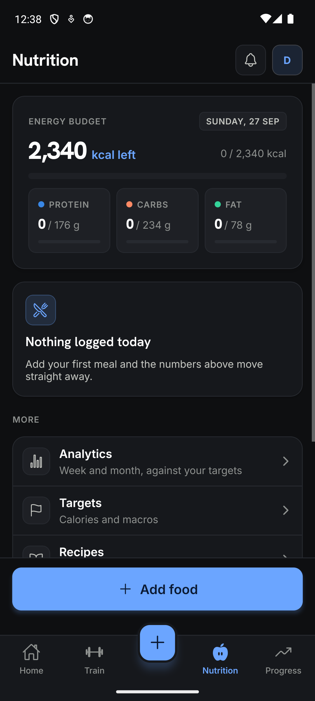
Every screen captured
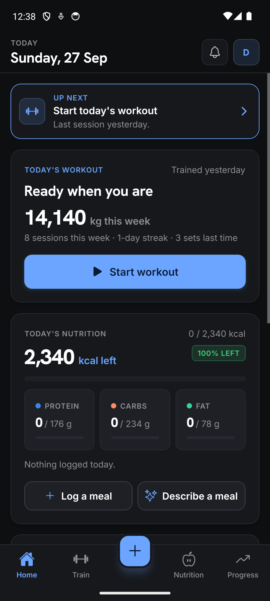
HomeThe "up next" line says what to do; each card has one clear button.
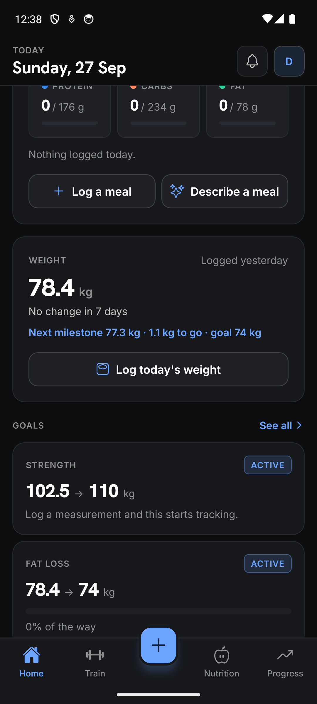
Home, scrolledWeight with its date and the goal milestone; goals in words.Nutrition diaryWhat is left leads; Add food is pinned at the thumb.
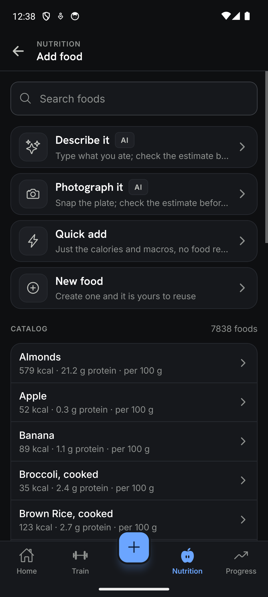
Add foodFour ways in as big rows, then the catalog.
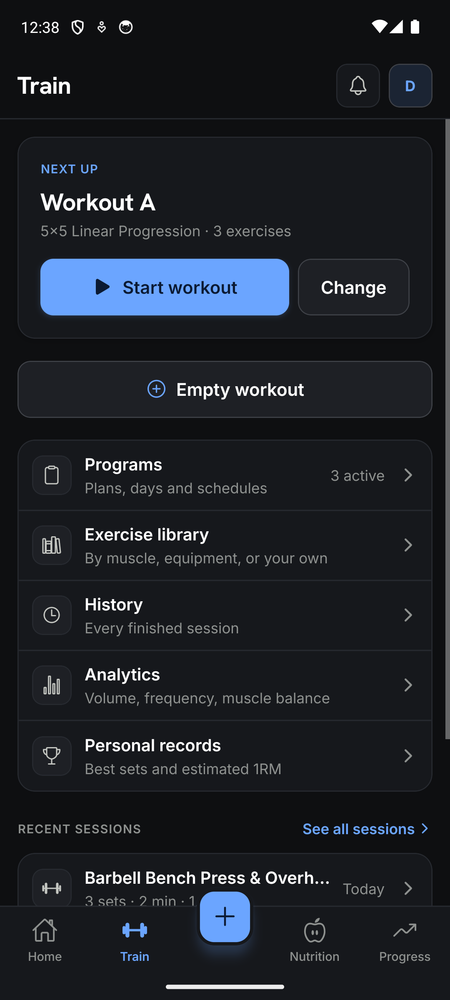
TrainNext workout with one Start button; every row says what is behind it.
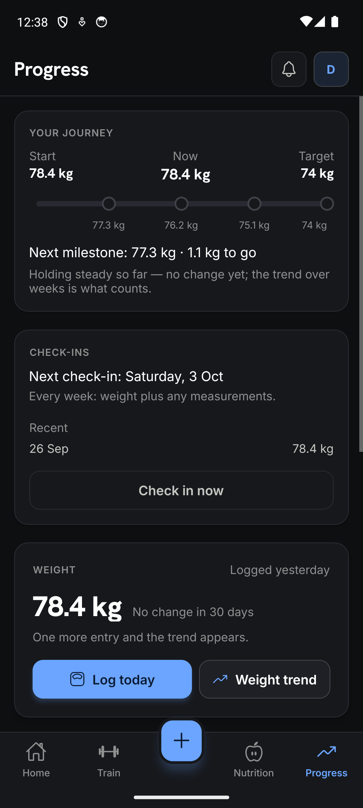
ProgressJourney, check-ins, then weight with Log today as the primary action.
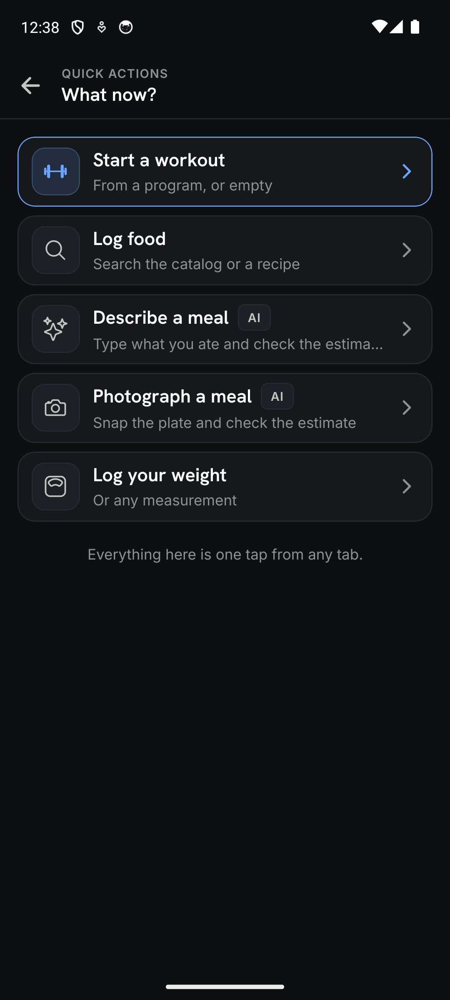
Quick actionsThe centre button's menu; the suggested action is outlined.
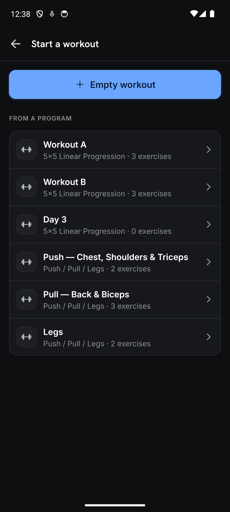
Start a workoutEmpty workout first, then every program day.
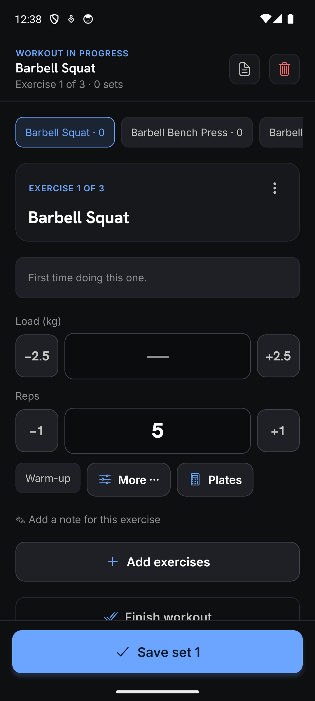
Logger, first setSave set 1 is pinned at the bottom; steppers show their step.Logger after a setRest timer becomes a sticky bar; the set table shows sync with an icon.
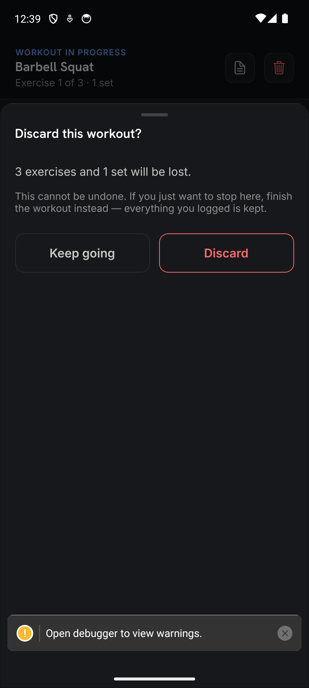
DiscardSays exactly what will be lost and offers the safer choice first.